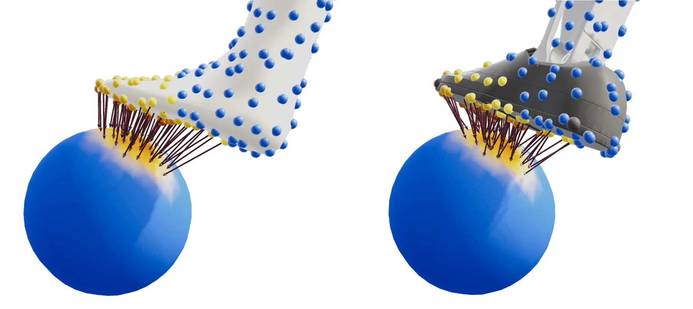
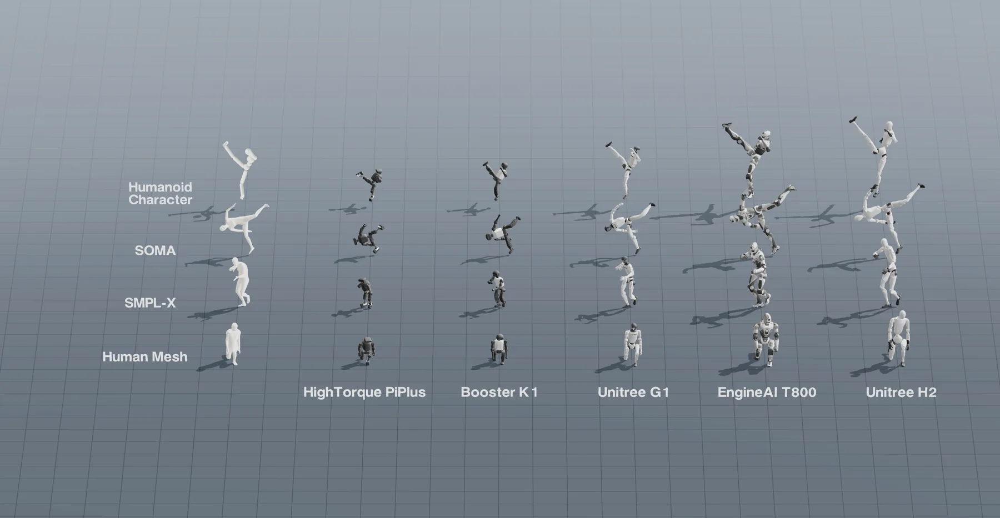
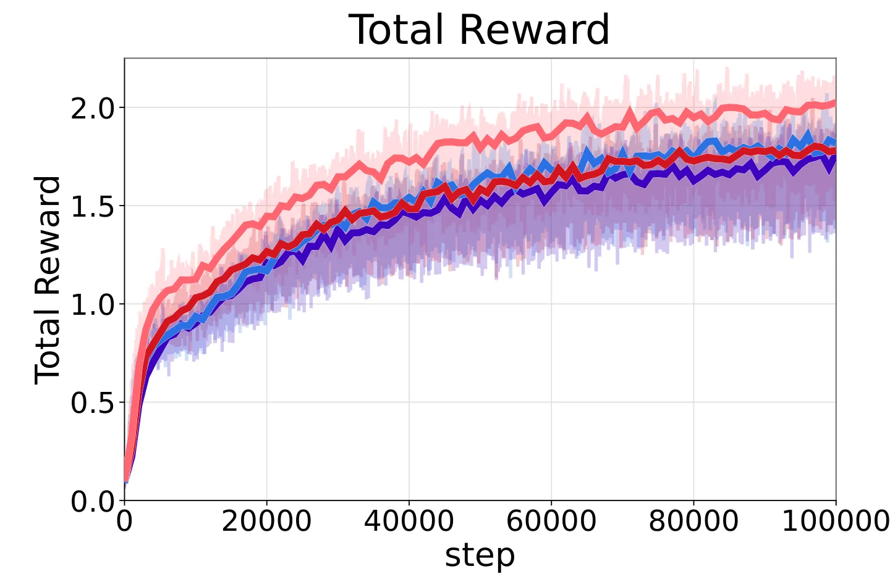
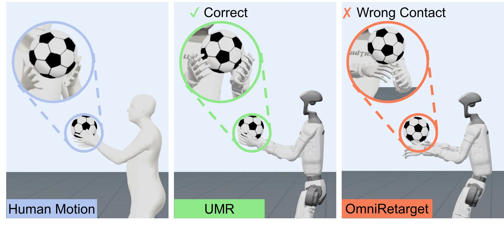

UMR：利用学习式点云对应的统一人形机器人动作重定向
Unified Motion Retargeting for Humanoids with Learned Point Cloud Correspondence
这是从几何对应到具身决策数据的桥接工作：学习一次的表面对应关系被复用于整段动作，并通过显式约束优化生成机器人参考轨迹。
作者、单位与技术谱系 · Research context
作者与单位
研究脉络
- 骨骼关键点/身体部件映射方法基座关系：从稀疏语义对应转向外部表面点云接口[论文引言与相关工作]
- GMR、Unitree references 与点云身体对应方法上游关系：承接通用 retargeting 和点云 correspondence，再加入接触约束优化[论文相关工作与实验]
- UMR dense correspondence + constrained optimization本篇推进关系：统一异构动作源、机器人形态和交互接触的参考生成[官方 HTML §III–IV]
合作网络
- HKUST(GZ) / Noitom Robotics / Hanyang University / HKUST / HKU论文作者 → UMR关系：论文署名跨单位[作者单位]
- LAFAN1 / BONES-SEED / OmniContact / GRAIL公开数据与任务 → UMR evaluation关系：实验数据与技术评测依赖[官方 HTML §IV]
网络只记录论文署名和正文明确的数据/技术依赖；不把共同实验或引用关系扩展解释为未证实的合作关系。
方法本质拆解 · What actually changed
训练
UMR 只在 canonical T-pose 的人类与机器人外部点云上训练对应网络，学习一次的 indexed pairs 被复用于动作序列。训练目标由 correspondence reconstruction、local relation preservation 和 edge consistency 加权组成，并非对每条动作轨迹重新拟合。
约束
重定向优化把点位置、法向和接触残差作为几何约束，同时加入关节上下界、线性约束和 Δq 范数限制。接触候选由人类点到物体点的最近邻及距离阈值确定，使表面对应能够传递交互接触。
推理
推理阶段先采样并预计算源/目标点云的可复用对应，再对每个动作 clip 解受限 Gauss–Newton 子问题。官方 HTML 指出子问题由 Clarabel 求解，整体 retargeting throughput 为 65.29 FPS；它不是神经网络直接回归最终关节轨迹。
机制
UMR 把形态差异转化为点云表面上的稠密几何锚点，再把这些锚点转成优化残差和接触约束。这样同一套接口可以跨动作源和 embodiment 复用，但对应质量和 canonical template 的偏差会直接进入后端状态估计。
输入 canonical T-pose 点云与动作点云，学习稠密表面对齐，再以位置/法向/接触和运动学约束求解机器人轨迹。

动机与问题Motivation
动机与问题
不同人形机器人在形态、自由度、关节范围和拓扑上差异很大，稀疏关键点映射难以覆盖表面接触与细节姿态。问题是如何摆脱每个动作源和机器人 embodiment 的手工语义设计，同时保持足够的几何约束来生成可执行参考轨迹。
方法Method
方法总览
UMR 在对齐的 canonical T-pose 上对人类和机器人外部点云采样，并训练 indexed dense correspondence，使同一索引对可以随 mesh 和动作帧传播。重定向时以点/法向残差和接触残差构成受限 Gauss–Newton 子问题，由 Clarabel 求解并输出机器人关节轨迹。
关键技术细节
对应学习损失由 Chamfer-like reconstruction、局部关系保持和 edge consistency 三项加权组成，分别约束覆盖、局部邻域和拓扑边关系。接触点通过最近邻和距离阈值筛选，优化中加入关节上下界、线性不等式和 Δq 二范数 trust-region 限制。

实验Experiments
实验设置
效率和逐动作跟踪在 LAFAN1 上评估，并比较 UMR、GMR 与 Unitree references；每个成功率条目来自 4,096 次试验。大规模策略学习使用 BONES-SEED/SONIC，交互实验使用 OmniContact 和 GRAIL；硬件为 RTX 4070 Ti SUPER 加 Core Ultra 7 265KF，指标含成功率、MPBPE、关节 MPJPE、joint error 和 object error。
实验数字与比较
计算效率为 setup 25.79 s，其中点采样 9.83 s、geodesic 预计算 5.58 s、对应训练 10.38 s；在线阶段整体 retargeting throughput 为 65.29 FPS。LAFAN1 Sim2Sim 中 Dance 成功率为 UMR 96.793% vs GMR 89.682%，Run 为 91.187% vs 81.244%；OmniContact Carry 为 99.28% vs OmniRetarget 82.89%，object error 为 0.081 vs 0.252 m，数字来自官方 HTML 表 I–IV。
消融/失败边界
论文主体强调 dense correspondence 解决手工稀疏映射不足，但官方 HTML 未提供一个统一的“去掉 correspondence loss 某一项”的完整消融表，因此该项具体影响待核验。作者明确的失败边界是依赖 mesh-based source geometry 和 canonical source template；无结构化观测、更灵巧手和多智能体交互尚未验证。
局限与迁移Limitations & Transfer
局限与待核验
作者明确承认当前 UMR 需要 mesh-based source geometry 与 canonical template，未来要扩展到更少结构的观测。待核验项包括点云采样密度、错误对应、快速接触切换、不同机器人关节约束以及 65.29 FPS 在更大模型和在线传感器管线中的端到端时延。
与你研究路线的关系
可迁移模块是把 learned correspondence 作为几何先验，把接触和运动学边界作为可解释因子，再用局部优化把表征转换成可执行状态。下一步可对对应置信度、接触残差和优化可观测性做故障注入，比较固定对应、重匹配和不确定性加权 Gauss–Newton 的恢复性能。
{kind=link}

{kind=link}

{kind=link}
